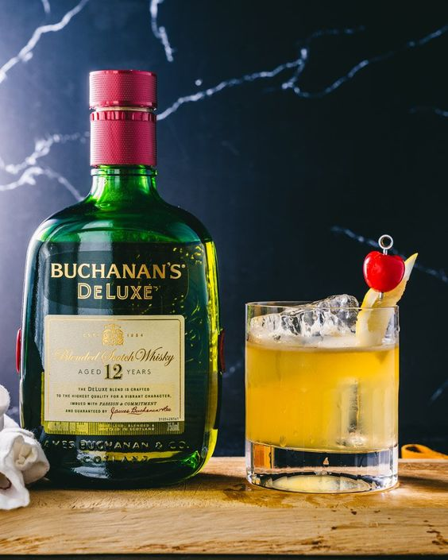

Whisky Jack Daniel's Green Apple
O Jack Daniel's Tennessee Apple combina a suavidade do Jack Daniel's com o sabor fresco de maçã verde, perfeito para quem busca um whisky frutado, ideal para ser consumido puro, com gelo, ou em coquetéis.

Whisky Tradicional Jack Daniel's
O Jack Daniel's Tennessee Whiskey é conhecido por seu sabor suave e levemente adocicado, resultado do processo de filtração em carvão de bordo. Ele apresenta notas de caramelo, baunilha e um toque de fumaça.

Whisky White Horse
O White Horse é um blend escocês robusto e encorpado, com notas de fumaça, caramelo e especiarias, ideal para ser apreciado puro ou em drinks.

Whisky Buchanan's
Buchanan's é um blend escocês conhecido por sua complexidade e equilíbrio. Com notas de mel, frutas secas e um toque de carvalho defumado, é apreciado tanto puro quanto em coquetéis.